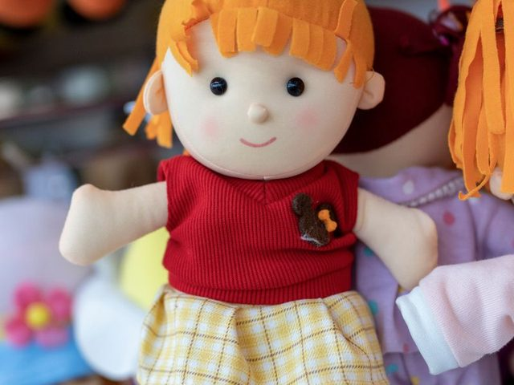
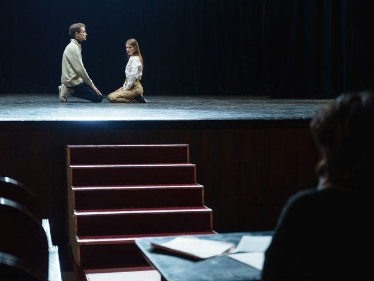
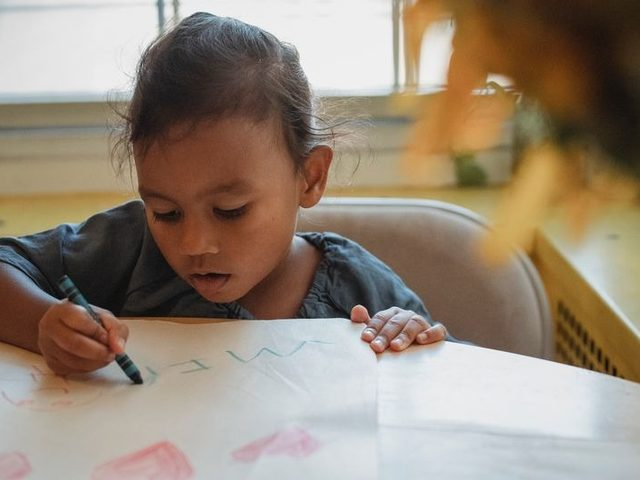
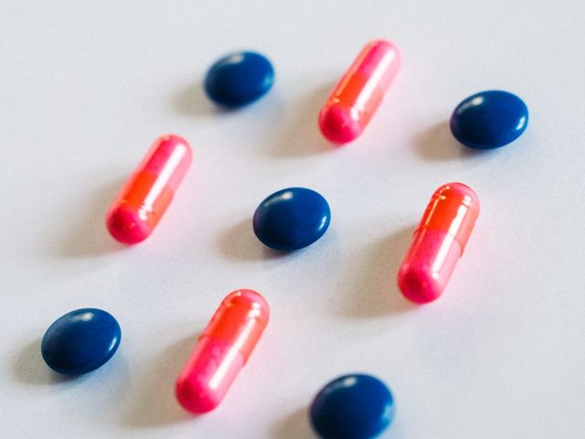
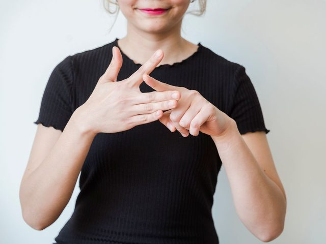

UNIT 15 · VOCABULARY
D 開頭（三）
D-III
37 個單字聽・唸・用
本單元單字一覽
WORD UP「D-III」的 37 個字（dog 到 duty）。紅色＝要複習，藍色標籤＝WORD UP 標熟記、還要在這裡考對。
dogdolldollardolphindonkeydoordotdoubleDouble Tenth DaydoubtdoughnutdowndownstairsdowntowndozenDr.dragonDragon-Boat Festivaldramadrawdrawerdreamdressdresserdrinkdrivedriverdropdrugdrugstoredrumdrydryerduckdumbdumplingduty
每個字都有 🔊，先聽發音、跟著唸，再看例句。
單字 1–4
dog
狗n.
Our dog barks at strangers.
我們的狗會對陌生人叫。
我們的狗會對陌生人叫。

doll
洋娃娃n.
My sister has a lot of dolls.
我妹妹有很多洋娃娃。
我妹妹有很多洋娃娃。

dollar
元（貨幣）n.
The ticket costs 100 dollars.
這張票 100 元。
這張票 100 元。

dolphin
海豚n.
Dolphins are very smart animals.
海豚是很聰明的動物。
海豚是很聰明的動物。
單字 5–8

donkey
驢子n.
The donkey carried the heavy bags.
驢子背著重重的袋子。
驢子背著重重的袋子。

door
門n.
Someone is knocking on the door.
有人在敲門。
有人在敲門。

dot
點；圓點n.
Connect the dots to draw a star.
把點連起來畫出星星。
把點連起來畫出星星。
✖️
double
雙倍的；加倍adj./v.
The price has doubled.
價格變成兩倍了。
價格變成兩倍了。
單字 9–12

Double Tenth Day
雙十節（國慶日）n.
There are fireworks on Double Tenth Day.
國慶日有煙火。
國慶日有煙火。
🤨
doubt
懷疑n./v.
I doubt that he will come.
我懷疑他會不會來。
我懷疑他會不會來。

doughnut
甜甜圈n.
I had a chocolate doughnut.
我吃了一個巧克力甜甜圈。
我吃了一個巧克力甜甜圈。
down
向下adv./prep.
Please sit down.
請坐下。
請坐下。
單字 13–16

downstairs
在樓下；到樓下adv.
Mom is downstairs in the kitchen.
媽媽在樓下廚房。
媽媽在樓下廚房。

downtown
在市中心；市區adv./n.
Let's go shopping downtown.
我們去市中心逛街吧。
我們去市中心逛街吧。

dozen
一打（12 個）n.
Mom bought a dozen eggs.
媽媽買了一打雞蛋。
媽媽買了一打雞蛋。
Dr.
醫生；博士（稱呼）n.
Dr. Lin is a kind doctor.
林醫師是一位親切的醫生。
林醫師是一位親切的醫生。
單字 17–20

dragon
龍n.
The dragon is a symbol of power in Chinese culture.
在中華文化裡，龍是力量的象徵。
在中華文化裡，龍是力量的象徵。

Dragon-Boat Festival
端午節n.
We eat rice dumplings during the Dragon-Boat Festival.
端午節我們吃粽子。
端午節我們吃粽子。

drama
戲劇；連續劇n.
My mom loves Korean dramas.
我媽媽很愛看韓劇。
我媽媽很愛看韓劇。

draw
畫（線條）；拉v.
Can you draw a cat?
你會畫貓嗎？
你會畫貓嗎？
單字 21–24

drawer
抽屜n.
The scissors are in the top drawer.
剪刀在最上面的抽屜。
剪刀在最上面的抽屜。
dream
夢；做夢；夢想n./v.
My dream is to be a pilot.
我的夢想是當飛行員。
我的夢想是當飛行員。

dress
洋裝；穿衣服n./v.
She is wearing a red dress.
她穿著紅色洋裝。
她穿著紅色洋裝。

dresser
梳妝台；五斗櫃n.
There is a mirror on the dresser.
梳妝台上有一面鏡子。
梳妝台上有一面鏡子。
單字 25–28
drink
喝；飲料v./n.
Drink more water every day.
每天多喝水。
每天多喝水。

drive
開車v.
My dad drives me to school.
爸爸開車載我上學。
爸爸開車載我上學。

driver
駕駛；司機n.
The bus driver is very careful.
公車司機很小心。
公車司機很小心。
drop
掉落；一滴v./n.
I dropped my phone on the floor.
我把手機掉在地上。
我把手機掉在地上。
單字 29–32

drug
藥；毒品n.
Say no to drugs.
對毒品說不。
對毒品說不。

drugstore
藥局n.
You can buy medicine at the drugstore.
你可以在藥局買藥。
你可以在藥局買藥。
drum
鼓n.
He plays the drums in the band.
他在樂團打鼓。
他在樂團打鼓。

dry
乾的；把…弄乾adj./v.
Dry your hair before you go to bed.
睡前把頭髮吹乾。
睡前把頭髮吹乾。
單字 33–36

dryer
烘乾機；吹風機n.
Put the clothes in the dryer.
把衣服放進烘乾機。
把衣服放進烘乾機。

duck
鴨子n.
The ducks are swimming in the pond.
鴨子在池塘裡游泳。
鴨子在池塘裡游泳。

dumb
笨的；啞的adj.
Sorry, that was a dumb question.
抱歉，那是個笨問題。
抱歉，那是個笨問題。
dumpling
餃子n.
Grandma makes the best dumplings.
奶奶包的餃子最好吃。
奶奶包的餃子最好吃。
單字 37–37
🛡️
duty
責任；職責n.
It is our duty to protect the earth.
保護地球是我們的責任。
保護地球是我們的責任。
容易搞混的字
| 字 | 用法 | 例子 |
|---|---|---|
| draw / drawer | 畫 ／ 抽屜 | draw a map ／ open the drawer |
| dress / dresser | 洋裝、穿衣 ／ 梳妝台 | a long dress ／ a wooden dresser |
| drug / drugstore | 藥、毒品 ／ 藥局 | take drugs ／ go to the drugstore |
| dry / dryer | 乾的、弄乾 ／ 烘乾機、吹風機 | dry the dishes ／ a hair dryer |
| downstairs / downtown | 樓下 ／ 市中心 | go downstairs ／ work downtown |
dozen 前面有數字時不加 s、不加 of：two dozen eggs。
不規則動詞三態
| 原形 | 過去式 | 過去分詞 |
|---|---|---|
| draw | drew | drawn |
| drink | drank | drunk |
| drive | drove | driven |
| dream | dreamed／dreamt | dreamed／dreamt |
| drop | dropped | dropped |
| dry | dried | dried |
快問快答：中文 → 英文
1狗dog
2元（貨幣）dollar
3驢子donkey
4點；圓點dot
5雙十節（國慶日）Double Tenth Day
6甜甜圈doughnut
7在樓下；到樓下downstairs
8一打（12 個）dozen
快問快答：英文 → 中文
1dragon龍
2drama戲劇；連續劇
3drawer抽屜
4dress洋裝；穿衣服
5drink喝；飲料
6driver駕駛；司機
7drug藥；毒品
8drum鼓
學完了！接下來
複習方法
review
- 回到「📗 單字卡」，按「遮中文」自己考自己
- 再按「遮英文」，看中文說出英文
- 每個例句跟著 🔊 唸一次
準備好了
- 按右上角「📝 前往測驗」
- 測驗錯的題目要訂正到全對
- 訂正完成補送 1 點